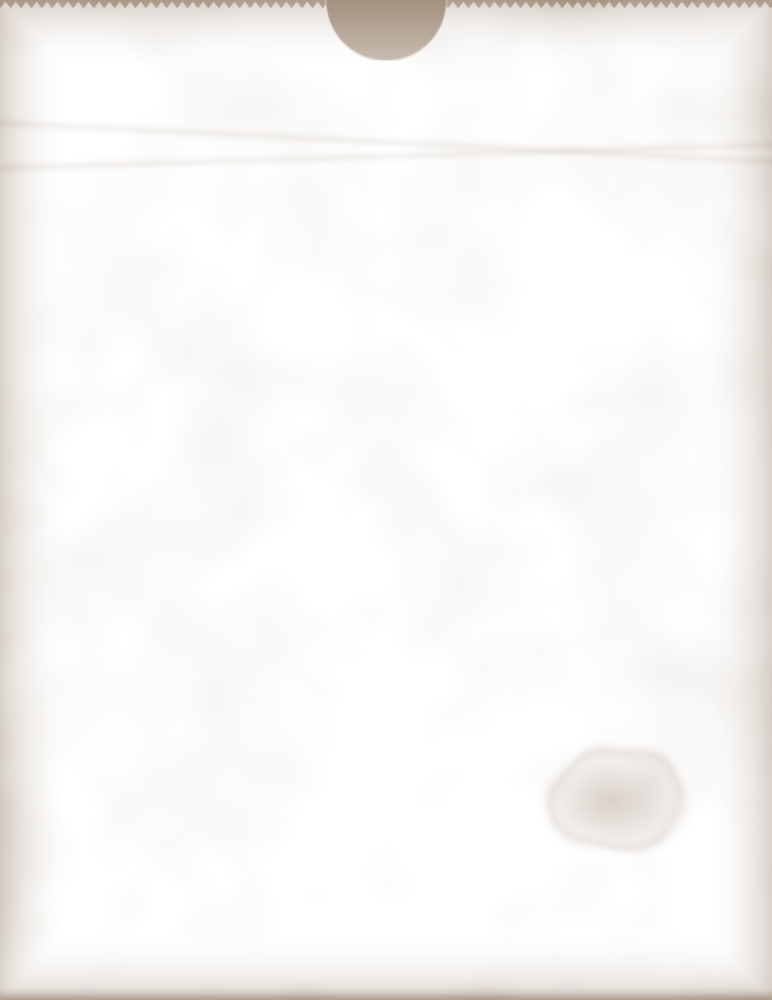

PANADERÍA Y CAFETERÍA
El Último
Tren
Tren
LAST TRAIN
ABIERTO HASTA EL ÚLTIMO TREN
Open till the last train, 7 days
SE ACEPTAN FICHAS•TOKENS ACCEPTED•PARA LLEVAR
Del hornoFrom the oven
Pastelitos de guayaba
.75
Puff pastry sealed around guava paste and cream cheese, baked golden and brushed with syrup.
Out of the oven every hour till close.
Token cookies
4 for 1.00
Butter shortbread cut the size of a subway fare, a hole punched through the middle and a brush of gold lustre.
Good for a cookie. Not a ride.
Pan de agua
1.25
Crusty white loaf, soft inside, baked twice a day. Ask for it buttered and pressed on the grill.
Al pesoBy the bag
Honey roasted nuts
1.50
Almonds, cashews and peanuts glazed with cinnamon sugar and a pinch of salt, turned in a hot oven until glossy. Sold warm in a paper cone.
Roasted here. Never torched.
POR DOCENA
Pastelitos 8.00 the dozen. Token cookies 2.75. Call ahead and we box them.
At the top of the subway stairs. Tel. 555-0195
LUNCH Y BEBIDAS AL DORSO
